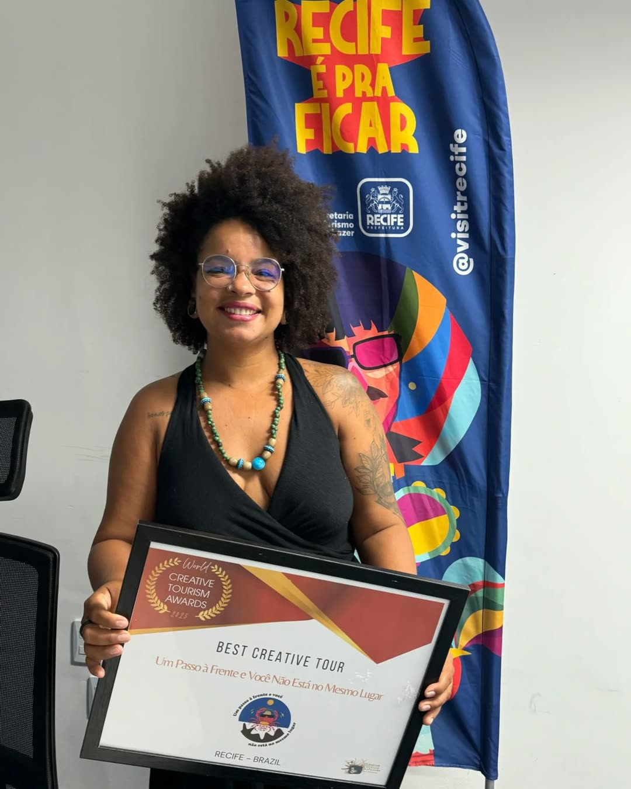

Essas palavras foram ditas por Manu Rodrigues, alguém que largou tudo para viver trabalhando para o setor há quase 9 anos. A história da guia turística começou na Ilha de Itamaracá, no Litoral Norte de Pernambuco, mas vai muito além do perímetro da ilha.
Mesmo com dificuldades financeiras, ela decidiu estudar e fazer o curso para se especializar na área enquanto se mudava para morar em Itamaracá, com o desejo de conhecer o local como ninguém mais conhecia. Deixou o emprego de recepcionista de uma escola particular na Zona Sul do Recife e por um ano e meio, morou dentro da mata. Manu chorava todos os dias com medo de não conseguir se formar e poder trabalhar no emprego dos seus sonhos. Faltava energia e conexão para ver as aulas, mas nunca a disposição de fazer dar certo e de conseguir se tornar guia de turismo.
Apesar das dificuldades, o amor pela profissão é o que está fazendo a guia ir cada vez mais longe com muito trabalho e esforço. A carreira começou de maneira repentina, só que a certeza e o ímpeto de que era a escolha certa para Manu se manteve e vem rendendo frutos até hoje. Em 2025, um roteiro da guia foi escolhido como o melhor do mundo pela Rede Internacional do Turismo Criativo.
Meses após a conquista, o trabalho de Emanuele foi reconhecido pela Organização das Nações Unidas para a Educação, a Ciência e a Cultura (Unesco) e também foi a única guia de Pernambuco a participar de uma ação promovida pelo Ministério do Turismo. Mesmo com o reconhecimento, ela alega não ter tido apoio ou auxílio de nenhum órgão público. No dia em que ganhou o prêmio, sendo a única mulher do Brasil a ganhar no segmento, não teve condições de ir buscá-lo. Outra pessoa teve que pegar o prêmio porque ela não tinha dinheiro para ir.


Com uma rotina agitada que se divide entre trabalho, estudo e maternidade e em meio da correria do dia a dia, Manu ainda encontra tempo para aprender espanhol e fazer pesquisas sobre o seu principal interesse na área: o afroturismo. Para ela, o turismo é uma forma de passar o que acredita. Um roteiro desenvolvido e mostrado pela guia é mais do que apenas um roteiro de viagem que será esquecido pelo turista após alguns dias, é sobre sentimento e trazer histórias esquecidas à tona com jeitos diferentes de ver.
Manu Rodrigues
Guia de turismo regional, nacional e da América do Sul
- Especialista em Afroturismo, Turismo de Base Comunitária e Turismo Criativo.
- Prêmio de Melhor Roteiro do Mundo pela Rede Internacional de Turismo Criativo, concorrendo com 16 países.
- Trabalho reconhecido pela UNESCO e pelo Ministério do Turismo.
- Única profissional de Pernambuco no Guia de Afroturismo Brasileiro.
- Única mulher do Brasil premiada no segmento de Afroturismo no Prêmio Nacional do Turismo em dezembro de 2025.
Roteiro digno de prêmio
O afroturismo é, justamente, o ponto central do roteiro vencedor do prêmio concedido pela Rede Internacional do Turismo Criativo. Intitulado de “Um passo à frente, você não está mais no mesmo lugar”, em uma clara homenagem à música de Nação Zumbi, a ideia do roteiro é passar pelos principais locais que fazem referência à cultura preta e indígena do Bairro do Recife.

A relação de Manu com o afroturismo partiu do desejo de fazer um trabalho que conseguisse empoderar e dar pertencimento e valorização a pessoas negras, com protagonismo e entendimento sobre a vivência histórica e cultural dessa população. Após assistir a um vídeo na Internet questionando se ela poderia contar a história negra da sua cidade e se ela já tinha procurado saber quais são as origens que ela passou a se interessar e a estudar o assunto.
Dar voz e vez, incentivar essas pessoas a viajarem e usufruírem do turismo foram algumas das vontades da guia com o início desse tipo de trabalho, que ainda não é tão conhecido no Brasil, apesar da forte herança afroindígena em um país com mais da metade da sociedade que se identifica como preta ou parda, além do objetivo de contar e difundir a verdadeira história sem uma visão eurocêntrica por trás. Relembrar esses personagens históricos também é uma forma de valorizar as manifestações que moldam a cultura de Pernambuco para quem ainda não entendeu esse valor, podendo desmistificar e combater ideias preconceituosas.
Entre os interesses do afroturismo, está a busca por um conhecimento maior acerca das religiões de matrizes africanas e afroindígenas. Segundo Manu, muitas vezes, os seus clientes têm interesse e curiosidade sobre o tema, mas têm vergonha ou medo de ir atrás. Nos passeios, ela costuma levar os turistas para conhecerem terreiros e falarem com os pais de santo, que entendem a religião com mais propriedade e conseguem defender com as suas próprias palavras o seu meio de vida. Isso também contribui para que as casas se mantenham ativas e em funcionamento na região, combatendo ainda a intolerância religiosa.

Para criar o roteiro “Um passo à frente, você não está mais no mesmo lugar”, que tem uma duração de aproximadamente cinco horas, foi necessário bastante estudo até que ela terminasse de desenvolver os principais pontos do tour. Horas foram gastas no chão do Memorial Chico Science, no bairro de Santo Antônio, com leituras de livros e pesquisas. Após o fim desses levantamentos, foi a vez de fazer visitas técnicas para entender os territórios, poder conhecer pessoas e fazer governanças relacionadas ao assunto. Com um roteiro que não abrange apenas o movimento do Manguebeat, mas também outros movimentos e ritmos da cultura popular que nasceram em Pernambuco, misturando história, música, dança e a biodiversidade do Recife ao falar de espécies dos mangues e do Rio Capibaribe.
No Bairro do Recife, a guia turística costuma iniciar pela Praça do Arsenal e pela Rua da Guia, e depois vai para o Museu ao Céu Aberto, onde apresenta todas as características da cidade. Na sequência, ela segue para a Rua do Bom Jesus e não fala só sobre a história tradicional, mas também sobre o mercado de escravizados e a cultura popular da área. São citados nomes como o de Josué de Castro e as inspirações para a criação do Maracatu Rural.
Esse olhar diferenciado é o que costuma chamar atenção no trabalho desenvolvido por Manu. Ao fugir do que é óbvio e comumente apresentado para os visitantes, ela também utiliza de músicas e poesias durante os seus roteiros, envolvendo e animando o público com oficinas. No repertório, ela usa canções de Naná Vasconcelos e de poetas presentes no Circuito da Poesia do Recife, com estátuas presentes em alguns pontos do centro da capital pernambucana.
No Marco Zero, é feita uma grande ciranda e promovida uma oficina sobre o assunto, que apresenta de onde o ritmo surgiu. De lá, segue para a Rua da Moeda e apresenta mais sobre o Manguebeat, botando as pessoas para se movimentarem e dançarem. Os participantes vão para o Caranguejo Gigante e para o Mercado São José, em São José, onde trabalham e participam de um momento de ensinamentos com os artesãos do local. O roteiro acaba no Pátio de São Pedro, com uma oficina de Maracatu para que os turistas possam aprender a dançar, a tocar e conhecer os fundamentos do ritmo.

Sair da mesmice do que é feito no Recife Antigo e mostrar detalhes que podem passar despercebidos pelos turistas vêm sendo um dos diferenciais da guia. Mudar a dinâmica e valorizar mais a cultura afroindígena ao invés de ouvir o que foi contado pelos europeus, entre portugueses, holandeses e franceses, e falar de quem botou as mãos para trabalhar e construir a grande parte dos monumentos históricos da cidade.
Essa é a missão de Manu ao fazer turismo, que acredita que a área tem potencial turístico, mas os turistas acabam sendo chamados a fazer sempre a mesma coisa. Na visão dela, o futuro do turismo são o afroturismo e o turismo criativo, sendo segmentos promissores que vieram para transformar a lógica tradicional do trabalho e incentivar os visitantes a quererem vivenciar os lugares como ela própria faz.